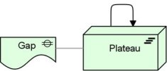

The Migration viewpoint entails models and concepts that can be used for specifying the transition from an existing architecture to a desired architecture.
| Stakeholders | Enterprise architects, process architects, application architects, infrastructure architects and domain architects, employees, shareholders |
| Concerns | History of models |
| Purpose | Designing, deciding, informing |
| Abstraction Level | Overview |
| Layer | Implementation and Migration extension |
| Aspects | n/a |
Concepts and Relations
